Hover on the London attractions to find out their fun facts!
Big Ben
We envisage Big Ben to be Parliament’s clock tower. However, Big Ben is actually the clock’s Great Bell, which is found inside the tower called Elizabeth Tower.

London Eye
The London Eye is Europe’s tallest cantilevered observation wheel on the South Bank of the River Thames in London. It is the most popular paid tourist attraction in the UK.
The Shard
The Shard is a 95-story super tall skyscraper, designed by the Italian architect Renzo Piano, in Southwark, London, that forms part of the Shard Quarter development.
London Bridge
Tower Bridge is a combined bascule and suspension bridge in London that crosses the River Thames close to the Tower of London and has become an iconic symbol of London.
Tower of London
The Tower of London is officially Her Majesty’s Royal Palace, is a historic castle located on the north bank of the River Thames in central London, founded towards the end of 1066.
The Gerkin
The Gerkin is a commercial skyscraper in London’s primary financial district, the City of London. It was completed in December 2003 and opened in April 2004.
Kings Cross Station
King’s Cross railway station, also known as London King’s Cross, is a passenger railway terminus in the London Borough of Camden, on the edge of Central London.
Buckingham Palace
The London residence and administrative headquarters of the monarch of the UK. The palace is often at the centre of state occasions and royal hospitality.
Marble Arch
Marble Arch is a 19th-century white marble-faced triumphal arch, designed by John Nash in 1827 to be the state entrance to the cour d’honneur of Buckingham Palace.
221b Baker Street
Click to find out more about the Sherlock Holmes Musuem at 221b Baker Street.